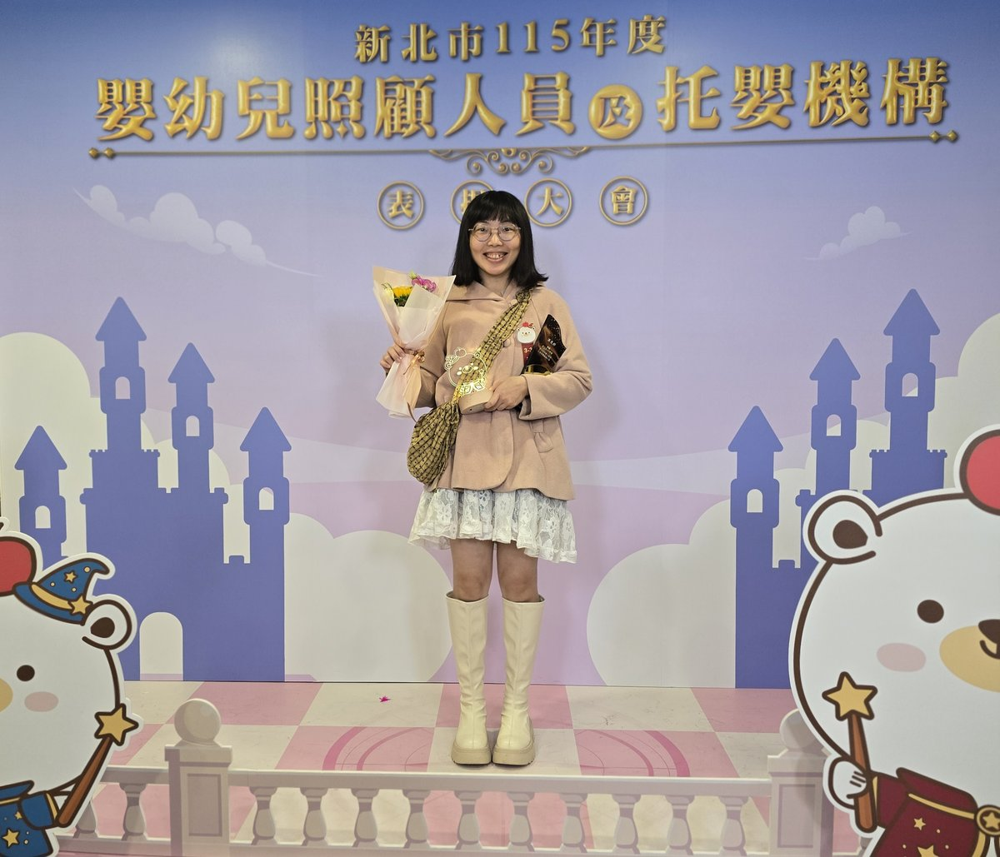
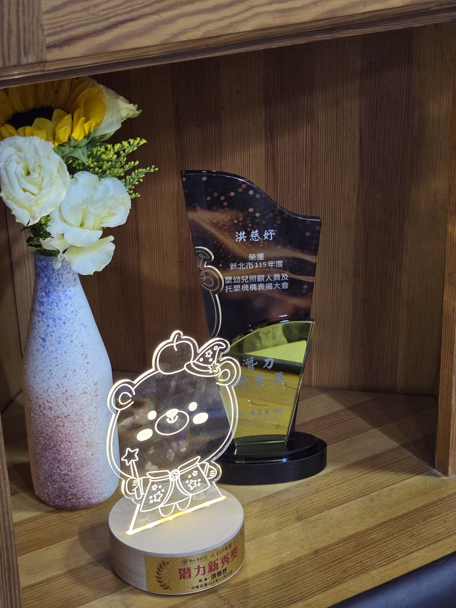

寫給家長的一封信
嗨，我是 Lucy。
要把自己的孩子交給一個從來不認識的人，一定會擔心，有戒備心也是正常的。所以我開了這個部落格，希望你能先知道我是個什麼樣的人、怎麼看育兒、有著什麼樣的家。
文章從我懷孕開始寫起：怎麼面對產檢、孕吐，怎麼布置嬰兒房；接著是生產與月子的選擇；然後是我思考要送保母、托嬰，還是自己帶，最後選擇自己帶的過程。親餵、布尿布、試用擠奶器、找背巾、挑嬰兒床與推車……一路寫到我的兒子現在五歲。
後來，為了配合兒子上小班的作息，我轉職成為在宅保母。我也會寫寫看：照顧別人的孩子，和照顧自己的孩子，有什麼不一樣。
歡迎慢慢看，我會持續更新。
🎬 福智福幼班影片
剛當媽媽時，我在福智文教基金會的福幼班（0～3 歲）得到許多義工老師與夥伴的陪伴，學到依附理論、角落遊戲、手指謠與戶外遊戲的帶領方法。影片裡有我接受採訪的畫面，邀請你一起看看。
以上為我個人的經驗與推薦。
🏅 三枚獎項
優質托育人員選拔
潛力新秀獎
2026 年 11 月 22 日
於新北市政府多功能集會堂，參加新北市 115 年度嬰幼兒照顧人員及托嬰機構表揚大會並領獎。
好繪說故事獎
2025 年 10 月
中文、英文的雙語故事，還有客語、閩南語繪本，都是我的說故事日常。
創意律動動感寶貝人氣獎
2025 年 10 月
用絲巾、棒棒糖鼓和兒歌，陪孩子玩得開心、動得健康。


🎧 Podcast 訪談
受邀上《蛤！人生有什麼意義？！》（原：職涯探索家），聊聊我的轉職與育兒觀察。